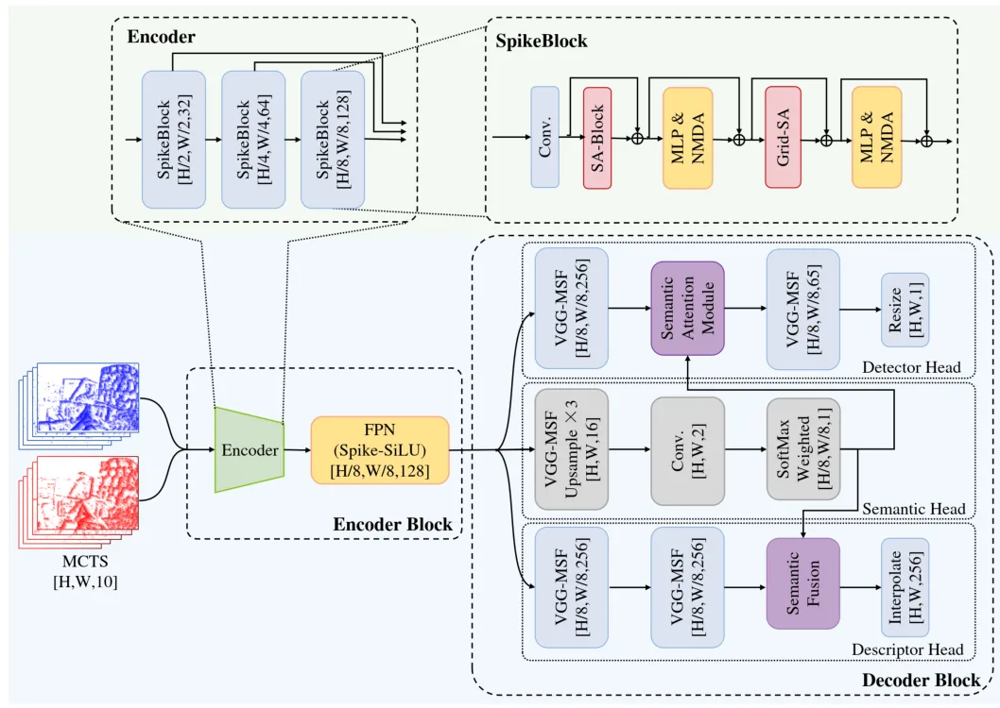
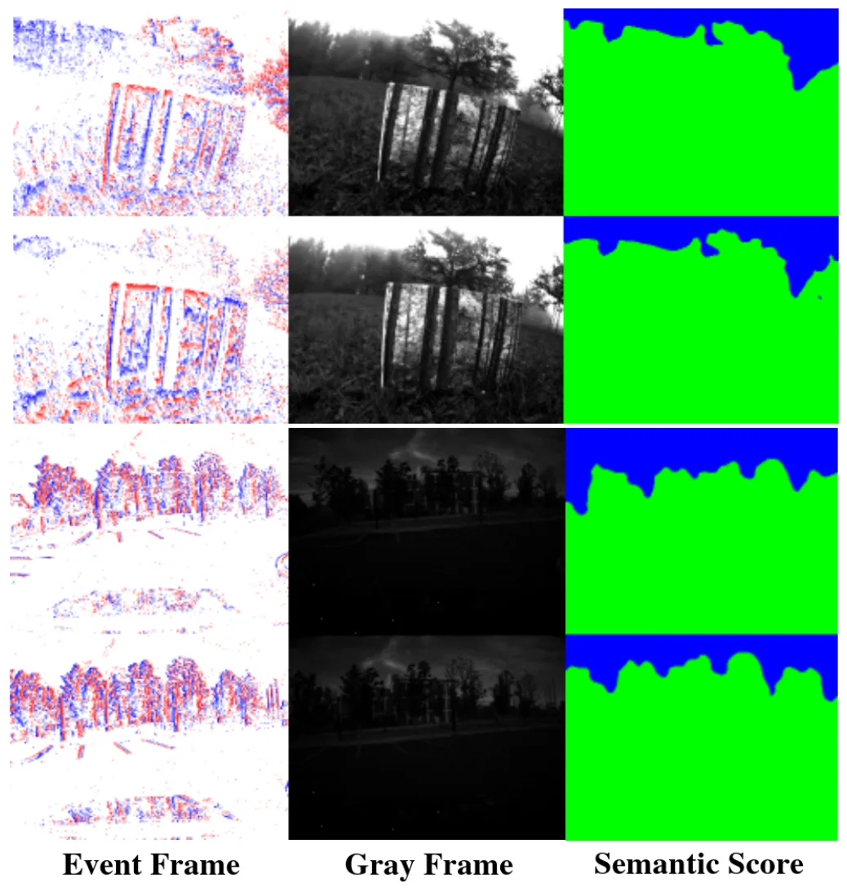
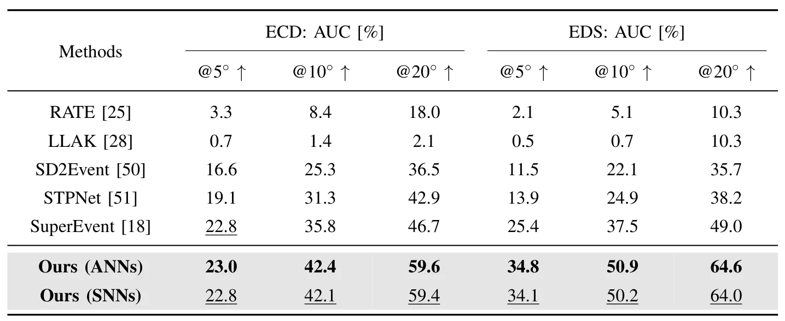

E-S2Feat：语义引导的事件相机脉冲局部特征检测与描述E-S2Feat:Semantic-Guided Spiking Local Feature Detection and Description for Event Cameras
直接覆盖事件特征、位姿估计和 TUM-VIE 视觉惯性里程计，兼顾 UAV 端能耗；但 4.8 倍是理论计算能效而非实机功耗，语义模块开销、端到端时延与跨场景泛化仍需验证。
一句话工作总结
用语义先验和模块化脉冲激活改善事件局部特征，在保持位姿估计精度的同时降低理论计算能耗。
摘要
E-S2Feat 是面向事件相机局部特征检测与描述的脉冲神经网络框架，旨在同时应对事件稀疏、噪声、纹理不足和资源受限平台的能耗约束。方法使用模块特定的 spiking activation，在低比特推理下保留细粒度结构和判别信息；同时借助语义先验调制关键点响应分布和描述子，提高特征的几何稳定性与区分度。作者报告其在 ECD、EDS 数据集上的位姿估计优于 SuperEvent，精度接近对应 ANN，同时理论计算能效约提高 4.8 倍；TUM-VIE 上的视觉惯性里程计实验进一步验证了其在完整 SLAM 系统中的应用潜力。
Benefiting from high temporal resolution and dynamic range, event-based local feature methods have attracted increasing attention. However, event sparsity, noise, and limited texture still hinder robust local feature learning. Deploying such methods on resource-constrained platforms such as unmanned aerial vehicles also requires balancing accuracy and energy efficiency. To address these challenges, this paper proposes \textbf{E-S2Feat}, a spiking neural network framework for event-based local feature detection and description. The framework jointly optimizes local feature learning from the perspectives of feature representation and selection. First, a module-specific spiking activation mechanism preserves fine-grained structural cues and discriminative information under low-bit, energy-efficient inference, thereby improving overall representation fidelity. Furthermore, a semantic-guided feature modulation mechanism leverages semantic priors to refine keypoint response distributions and enhance local descriptor discriminability, thereby guiding the model to extract local features with greater geometric stability and stronger discriminative capability. Experiments on the ECD and EDS datasets show that the proposed method significantly outperforms baseline methods such as SuperEvent in pose estimation accuracy. It also achieves accuracy comparable to its artificial neural network counterpart while delivering an approximately 4.8-fold improvement in theoretical computational energy efficiency. Visual-inertial odometry experiments on the TUM-VIE dataset further verify the effectiveness and practical application potential of the proposed method in complete SLAM systems.
中文解读摘录
- 论文：arXiv:2608.14027 · PDF
- 作者：Yang Yi, Juntao Hua, Jinpu Zhang, Liangwei Fan, Hui Shen, Dewen Hu
- 核心方法：通过模块特定的 spiking activation 在低比特推理中保存细粒度结构，以语义先验调制关键点响应与描述子，兼顾几何稳定性、判别性和端侧能效。
- 结果信号：摘要报告 ECD/EDS 位姿估计优于 SuperEvent，精度接近 ANN 对应模型，理论计算能效约提高 4.8 倍；并在 TUM-VIE 视觉惯性里程计中验证。
- 判断：与事件 VIO 和 UAV 端侧部署直接相关。需要区分“理论计算能效”与实际整机功耗，并检查语义分支的算力、时延、训练依赖和在照明/运动退化条件下的泛化。
- 评分：8.4/10。
图表/页面预览

{kind=link}

{kind=link}

{kind=link}
